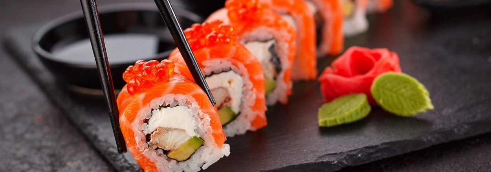
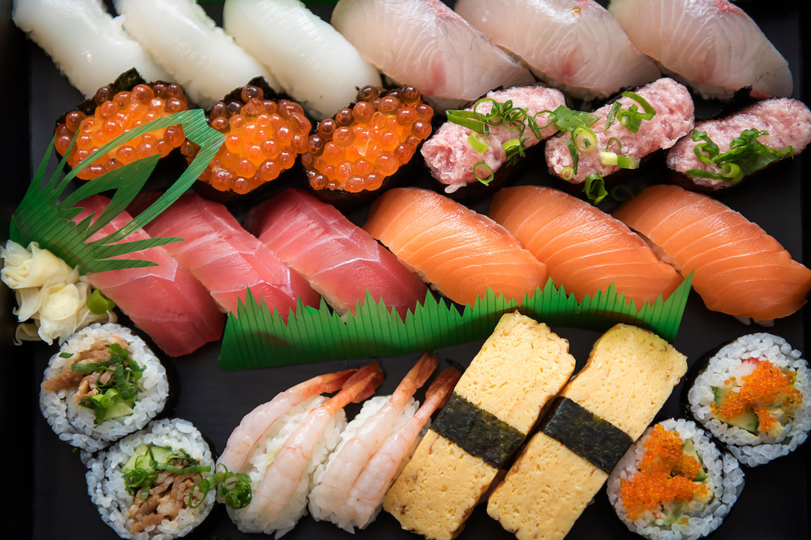

Sushi is a celebrated culinary art that blends simplicity, precision, and bold flavor into every bite. Originating in Japan, it traditionally features vinegared rice paired with fresh seafood, vegetables, or egg, all carefully arranged to create balance in taste and texture. From delicate slices of sashimi to neatly rolled maki and hand-formed nigiri, each style of sushi highlights the quality of its ingredients. The subtle sweetness of the rice, the richness of fish like salmon or tuna, and the sharp touch of wasabi come together in a way that feels both refined and comforting.Beyond its flavor, sushi is an experience rooted in craftsmanship and culture. Skilled chefs spend years mastering knife techniques, rice preparation, and presentation, treating each piece as a small work of art. Whether enjoyed at an elegant sushi bar or ordered casually for takeout, sushi invites people to slow down and savor each bite. Its combination of freshness, beauty, and tradition has made it a beloved dish around the world, offering a taste of both culinary skill and cultural heritage in every roll.